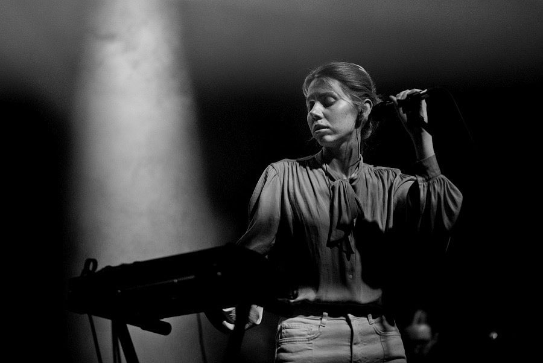

Біографія
Історія утворення гурту
Гурт «Один в каное» утворився у 2010-му році у Львові.
З того часу гурт побував з сольними концертами у більшості великих міст України, виступив у Празі, Парижі, Кембриджі, Мінську, Москві та Гданську, взяв участь у багатьох фестивалях.
Кількість учасників неодноразово змінювалась, в результаті чого від початкового складу залишилося двоє: Іра Швайдак (вокалістка) та Устим Похмурський (гітарист). Згодом вони запросили до себе перкусіоністку Олену Давиденко. В такому складі колектив проіснував шість років, видавши у 2016-му дебютну платівку з однойменною назвою «Один в каное». До альбому ввійшло 25 композицій, як результат п’ятирічних пошуків вічних сенсів, гаслом яких досі залишаються більше, ніж слова: «Сила в простоті».
Сучасний склад колективу творять вокалістка Ірина Швайдак, гітарист Устим Похмурський та сесійний барабанщик Ігор Дзіковський.
Зараз гурт активно працює над новим повноформатним альбомом.